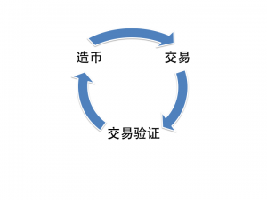
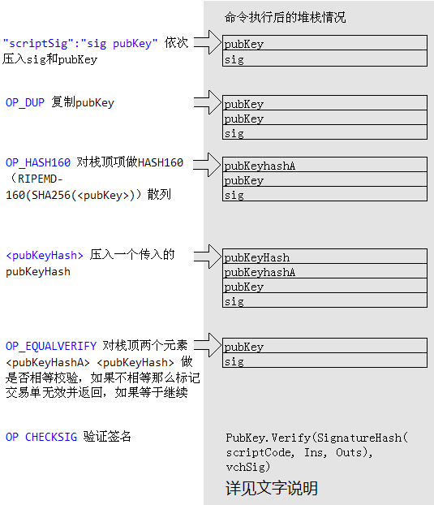

开源 Bitcoin P2P电子货币是点对点的电子现金系统，创建于2009年[http://en.wikipedia.org/wiki/Bitcoin]。无需金融机构直接点对点支付。该电子货币系统的特色是无需信托中间人，能够方便的进行互联网上的汇款。第三方不能够控制或者阻止您的交易。Bitcoin 交易几乎免费, 而信用卡的网上在线支付系统通常收取 1-5% 的交易费用，加上其他各种费用高达数百美元。避免了中央储备银行的不良政策和不稳定性所造成的安全隐患. Bitcoin系统的有限货币通胀是均匀分布(由CPU决定)于整个网络, 而不是由银行垄断。
这被某些人认为是最危险的开源项目，但我觉得恰恰相反，这是有史以来最令人兴奋的开源项目。这样发行的币才是真正的“人 民 币”，人民才是被服务，而不是被管理。P2P必将从商业、政治、生活各个方面重新定义新的更加公平公正的意识形态。
名词解释以及背后的技术
Bitcoin涉及到很多有意思的技术，要想搞懂bitcoin首先必须对这些技术理解和把握然后是对Bitcoin术语的理解，bitcoin最重要的技术支撑是P2P，数字签名(EC DSA)，散列(SHA256, RIPEMD-160), POW，和HashCash。而术语则是：transaction, block, address, Merkle Tree.
工作证明 POW(Proof-Of-Work)机制
工作证明POW系统是要求对方服务前，必须要出据某种工作证明的机制。主要用于防止拒绝服务攻击和反垃圾信息。通常这种“工作证明”会花费一定的时间计算才能得到。最常见的例子是CAPTCHA。另外用于防止DoS和垃圾信息的机制是HashCash，bitcoin使用的原理就类似于HashCash.
HashCash 机制
hashcash 的灵感来自于这样一个想法，即一些数学结果难于发现而易于校验。一个众所周知的例子是因数分解一个大的数字（尤其是因数较少的数字）。将数字相乘来获得它们的积的代价是低廉的，但首先找到那些因数的代价却要高得多。
对交互式质询来说，因数分解足以胜任。比如，希望客户端能象征性地为其付出代价方能访问在线资源。这个时候可以定义协议，首先服务器向客户端发送一个消息，说“只要您能因数分解这个数，我将让您得到这个资源”。没有诚意的客户端将无法得到我的资源，只有那些能够证明自己有足够的兴趣、付出一些 CPU 周期来回答这个质询的才能得到这个资源。
不过，有一些资源无法很方便地进行交互式协商。比如电子邮件反垃圾或者支付交易，怎么才能避免邮箱不被垃圾邮件所占据？“我并不介意陌生人给我写信，但是，我希望他们能以稍微认真的态度，亲自通过对我有价值的邮件与我取得联系。至少，我不希望他们是垃圾邮件制造者，那些人向我和上百万的其他人发送包含同样消息的邮件（double-spending），期望我们中的某些人能购买某种产品或者落入一个骗局。”而对于电子货币，内容的复制几乎是没有代价的，如何保证电子货币（内容）没有被交易（发送）多次？这和反垃圾邮件是同样的问题。
hashcash的解决之道就是：在电子邮件的消息头中，增加一个 hashcash 戳记（hashcash stamp）散列值；该散列中包含收件人地址，发送时间，salt，该散列值特别之处在于它至少前20位必须是0才是一个合法的hashcash戳记。为了得到合法的散列值，发送者必须经过许多次尝试（改变salt值）才能获得。一旦生成戳记，不希望每一个给我发送邮件的垃圾邮件制造者都能重复使用它。所以，hashcash 戳记要带一个日期。这样可以指定时间更早的戳记是非法的。另外 hashcash 的接收端要实现一个double-spending数据库，用来记录戳记的历史信息。
Bitcoin中的术语解释
散列：bitcoin在计算散列时一般会计算2次。第一轮总是使用SHA-256散列，而第二次在大多数情况下，也是使用SHA-256散列，但用于生成较短的散列(例如生成 bitcoin接收地址的时候)会用RIPEMD-160散列。
|
|
生成比特币地址时(RIPEMD-160)：
|
|
Addresses: Bitcoin Address是ECDSA公钥(public key)的散列，计算方法如下：
|
|

Bitcoin 电子货币系统的核心功能是面对面（点对点）支付，就像真实货币一样，无需中间人，
几乎不需要交易费。它背后的技术实现是很巧妙的通过将造币(Mint)，交易(transaction，
这里提到的交易都是特指的支付)，交易验证(transaction verifiction)交织在一起，形成一
个完美的圆。所以要想把它的机理理解清楚，就必须同时理解bitcoin的电子货币，交易，
造币的确切含义。
首先从电子货币谈起。
电子货币和交易单(Transaction)
Bitcoin电子货币解决的是：
- 任意造币的问题：通过“挖矿”机制保证了不能任意造币。
- 重复花钱的问题(Double-Spending)：利用P2P网络，通过HashCash的机制。
事实上Bitcoin系统中不存在独立的电子货币，货币值是依附于交易单存在的，
所以在bitcoin中的电子货币的实质就是交易单，确切的说是货币交易（Transactions）
的 数字签名链，它的数字签名算法使用的是ECDSA（椭圆曲线数字签名算法 secp256k1曲线）进行签名的。
交易单的数据如下：
|
|
交易单记录的是本次交易的收入来源(in)和支出(out)。当你支出（给）一笔钱的时候，
首先在交易单中就要描述清楚你要支出(out)的钱的收入来源(in)，然后在支出(out)
项中，指明要支出的金额，以及通过脚本的形式写明接收者的公钥，然后用自己的私钥
签名(scriptSig)认可该笔交易，最后将交易单广播到网络。
收入来源(in):
- Previous tx: 为收入来源交易单的散列值，也就是待支付的钱是谁给你的，经常会有多个收入来源被列在交易单中
- index: 指明是收入来源交易单中具体哪一个out，也就是Previous tx交易单中的out索引值（因为out也可以有多个）。
- scriptSig: 拥有者对该交易的ECDSA签名认可。
接收对象(out):
- Value: 发送的币值，以Satoshi 为单位，1BTC = 100,000,000 Satoshi
- scriptPubKey: 接收方的公钥脚本。
in与out的关系：
- 每一笔交易，out的总额应该等于in的总额。但是，在这个交易单里，只会有out的Value，没有in的Value，而是通过in的Pervious与index，追溯到上一个交易单的某一个out，获得Value。
- 一次send bitcoin，剩下的钱，应该out给自己，否则这个钱就丢了。
情况列举：
- 我有10个BTC，是某一次交易获得的，我要送给朋友A，10个BTC。这时候，有一个in，一个out。
- 我有10个BTC，是某一次交易获得的，我要送给朋友A，5个BTC，这时候，有一个in，两个out，一个指向朋友5个BTC，一个指向我自己，得到剩下的5个BTC。
- 我有10个BTC，是以前的两次交易获得的，我要送给朋友A，10个BTC，这时候，有两个in，一个out。
- 我有10个BTC，是以前的两次交易获得的，其中一次获得了6个BTC，另一次获得了4个BTC，我要送给我的朋友7个BTC，这时候，有两个in，两个out。
|
|
每一笔交易单验证追查到最后，第一笔总是“挖矿”所得，这被称为coinbase。
如果是第一次“挖矿”所得，电子货币的内容用JSON格式表示如下：
|
|
每一笔交易都会向整个P2P网络广播该货币的交易记录。通过投票机制，来决定该支付交易是否正常。如节点认为该交易记录是正常的那么就通过CPU计算POW(Proof-of-Work),然后广播，其它节点收到这个POW可以继续投票，形成Block 链（见挖矿）。如果节点收到不一致的两个交易记录，那么只信任链最长的。如果一笔Bitcoin被支出两次的情况广播出来，那么某些节点将先看到它第一次发生的支付交易，其他节点则看到的是它第二次发生的支付交易。究竟是哪一个支付交易“赢”了，则是由恰好创建了下一个block的那个节点来决定 —— 无论是哪个节点找到了“小的散列值”， 它的block中包含的那个支付交易被判断为有效的，其他的支付交易被视为无效。
接下来讲讲交易单的类型和交易验证的实现细节。
交易的类型与验证
交易单(Transaction)目前被bitcoin分为3种：
- 按IP地址转账(Transfer)
- 按接收地址转账(Transfer)
- 造币(Generation)
通过前面对交易单的描述，我想大家应该已经知道，交易的验证是通过不断的追溯交易单来完成的。那么交易验证的细节是如何实现的，bitcoin的交易验证的实现细节是很意思的，它是通过脚本来实现验证的，这样bitcoin就实现了一个可被脚本扩展的行为，更加广义的”交易”，这可以保证足够的灵活性和可扩展，可以想象也许以后会有真正的分布式计算任务跑在上面作为一笔交易。因此要想讲清楚验证的细节，就不得不从脚本系统讲起了。
脚本系统
Bitcoin的脚本系统是使用类FORTH语言（FORTH在嵌入式设备中是我最喜欢的一种语言）实现的，FORTH系统是面向栈的“高级机器”语言，它兼具了高级语言的特性（面向WORD）和机器语言的高性能与小尺寸，唯一的缺点就是可读性不高，基本上可以把FORTH当一种高级的机器语言吧。Bitcoin在实现上做了许多简化和特殊实现，所以只能算是类FORTH的系统。
在FORTH系统中所有的命令(函数)都被称为单词（WORD），所有数据的处理都要压入数据栈上进行，所以FORTH被称为面向栈的语言。
比如 1和2相加，在FORTH系统中则是 1 2 ＋，数字 1，2 表示将它们压入到数据栈中（在FORTH解释器执行后实际指令会有OP_PUSH），＋的操作则是将栈顶和次栈顶的数字取出并相加，并将结果压回数据栈。
Bitcoin的脚本系统的所有的操作指令（单词）见后面的附录，不是所有的操作指令都能被执行支持，因为安全上的考虑有的操作指令被禁止掉了，比如大多数的字符串操作和乘除运算。
在FORTH系统中一般会定义该系统是8位FORTH, 16位FORTH还是32/64位FORTH，这和数据栈的值长有关。在Bitcoin中的脚本系统使用的堆栈是用（vector<vector<unsigned char> >）来模拟的，它在数据栈的每一项都是以字符串的形式存放，它的数值是统一用CBigNum来运算的（读到这里应该明白为啥bitcoin会限制乘除运算了），每一次从数据栈中压入(CBigNum.getvch())或者取出数值(CastToBigNum(stacktop[-1]))都要进行一次转换。看着这样的实现，让我有点发怵，本能的不喜欢，怎么能把高效的FORTH搞成这个样子。Bitcoin的脚本系统与FORTH一样，有两个堆栈，一个数据栈，在Bitcoin中被称为main stack,一个返回栈，在Bitcoin中被称为alt stack（事实上在Bitcoin中将alt stack作为数据栈的中转而还没有作为FORTH意义上的返回栈）. Bitcoin的脚本系统没有实现单词定义，流程跳转，循环控制（FOR, WHILE），对IF的实现非常丑陋。事实上我对Bitcoin的脚本实现不是十分认可，堆栈采用变长的数据值，直接将big number 作为opcode，导致每一次opcode执行开销无法控制，由于没有完整实现FORTH的控制指令，导致用trick的方式来实现IF指令，在bitcoin中也因此无法定义新的WORD。总之我很不喜欢bitcoin的这个脚本引擎实现(参见script.cpp)。
下一篇将接着介绍下和交易验证相关的几个操作符：OP_DUP, OP_HASH160, OP_EQUALVERIFY , OP_CHECKSIG 的功能，现在有点倦了。
|
|
附录Bitcoin脚本系统单词列表
参见：https://en.bitcoin.it/wiki/Script：
常量
常量就是用来把数据压入栈中的单词：
| 单词 | 虚拟指令(opcode) | 输入 | 输出 | Description |
| OP_0, OP_FALSE | 0 | Nothing. | 0 | 压入数字0到栈中 |
| N/A | 1-75 | (special) | data | 将紧随 opcode 的data数据 opcode个字节压入到堆栈。opcode兼作数据长度指示。 |
| OP_PUSHDATA1 | 76 | (special) | data | 紧随该指令的下一个字节是被压入数据大小，然后是被压入数据 |
| OP_PUSHDATA2 | 77 | (special) | data | 紧随该指令的两个字节是被压入数据大小，然后是被压入数据. |
| OP_PUSHDATA4 | 78 | (special) | data | 紧随该指令的4个字节是被压入数据大小，然后是被压入数据. |
| OP_1NEGATE | 79 | 无. | -1 | 压入-1 |
| OP_1, OP_TRUE | 81 | 无. | 1 | 压入1. |
| OP_2-OP_16 | 82-96 | 无. | 2-16 | 2－16被压入. |
控制流
| 单词 | 虚拟指令(opcode) | 输入 | 输出 | Description |
| OP_NOP | 97 | 无 | 无 | 空指令. |
| OP_IF | 99 |
| OP_NOTIF | 100 |
| OP_ELSE | 103 |
| OP_ENDIF | 104 |
| OP_VERIFY | 105 | True / false | Nothing / False | 标记交易单无效 如果栈顶值不为真。当栈顶值为真，移除该栈顶值，否则保留该值。 |
| OP_RETURN | 106 | Nothing | Nothing | 标记交易单无效. |
堆栈操作
| 单词 | opcode | 输入 | 输出 | Description |
| OP_TOALTSTACK | 107 | x1 | (alt)x1 | 从数据栈中弹出栈顶 数据，压入辅助栈。 |
| OP_FROMALTSTACK | 108 | (alt)x1 | x1 | 从辅助栈弹出栈顶数据压入到数据栈 |
| OP_IFDUP | 115 | x | x / x x | 如果栈顶非0则复制栈顶 |
| OP_DEPTH | 116 | Nothing |
| OP_DROP | 117 | x | Nothing | 丢弃栈顶数据. |
| OP_DUP | 118 | x | x x | 复制栈顶数据. |
| OP_NIP | 119 | x1 x2 | x2 | 丢弃次栈顶数据 |
| OP_OVER | 120 | x1 x2 | x1 x2 x1 | 复制次栈顶数据到栈顶. |
| OP_PICK | 121 | xn … x2 x1 x0
| OP_ROLL | 122 | xn … x2 x1 x0
| OP_ROT | 123 | x1 x2 x3 | x2 x3 x1 | 栈顶3项数据向左旋转. |
| OP_SWAP | 124 | x1 x2 | x2 x1 | 栈顶2项数据交换. |
| OP_TUCK | 125 | x1 x2 | x2 x1 x2 | 栈顶数据复制并插入到次栈顶数据前 |
| OP_2DROP | 109 | x1 x2 | Nothing | 同 DROP，只是数据项是2项. |
| OP_2DUP | 110 | x1 x2 | x1 x2 x1 x2 | 同 DUP，只是数据项是2项. |
| OP_3DUP | 111 | x1 x2 x3 | x1 x2 x3 x1 x2 x3 | 同 DUP，只是数据项是3项. |
| OP_2OVER | 112 | x1 x2 x3 x4 | x1 x2 x3 x4 x1 x2 | 同 OVER，只是数据项是2项. |
| OP_2ROT | 113 | x1 x2 x3 x4 x5 x6 | x3 x4 x5 x6 x1 x2 | 同 ROT，只是数据项是2项. |
| OP_2SWAP | 114 | x1 x2 x3 x4 | x3 x4 x1 x2 | 同 SWAP，只是数据项是2项. |
字符串处理
字符串处理的大多数指令都被禁止了。
| 单词 | opcode | 输入 | 输出 | Description |
| OP_CAT | 126 | x1 x2 | out | Concatenates two strings. [禁止] |
| OP_SUBSTR | 127 | in begin size | out | Returns a section of a string. [禁止] |
| OP_LEFT | 128 | in size | out | Keeps only characters left of the specified point in a string. [禁止] |
| OP_RIGHT | 129 | in size | out | Keeps only characters right of the specified point in a string. [禁止] |
| OP_SIZE | 130 | in | in size | 返回字符串长度 |
位运算
| 单词 | opcode | 输入 | 输出 | Description |
| OP_INVERT | 131 | in | out | Flips all of the bits in the input. [禁止] |
| OP_AND | 132 | x1 x2 | out | Boolean and between each bit in the inputs. [禁止] |
| OP_OR | 133 | x1 x2 | out | Boolean or between each bit in the inputs. [禁止] |
| OP_XOR | 134 | x1 x2 | out | Boolean exclusive or between each bit in the inputs. [禁止] |
| OP_EQUAL | 135 | x1 x2 | True / false | Returns 1 if the inputs are exactly equal, 0 otherwise. |
| OP_EQUALVERIFY | 136 | x1 x2 | True / false | Same as OP_EQUAL, but runs OP_VERIFY afterward. |
数学运算
| 单词 | opcode | 输入 | 输出 | Description |
| OP_1ADD | 139 | in | out | 1 is added to the input. |
| OP_1SUB | 140 | in | out | 1 is subtracted from the input. |
| OP_2MUL | 141 | in | out | The input is multiplied by 2. [禁止] |
| OP_2DIV | 142 | in | out | The input is divided by 2. [禁止] |
| OP_NEGATE | 143 | in | out | The sign of the input is flipped. |
| OP_ABS | 144 | in | out | The input is made positive. |
| OP_NOT | 145 | in | out | If the input is 0 or 1, it is flipped. Otherwise the output will be 0. |
| OP_0NOTEQUAL | 146 | in | out | Returns 1 if the input is 0. 0 otherwise. |
| OP_ADD | 147 | a b | out | a is added to b. |
| OP_SUB | 148 | a b | out | b is subtracted from a. |
| OP_MUL | 149 | a b | out | a is multiplied by b. [禁止] |
| OP_DIV | 150 | a b | out | a is divided by b. [禁止] |
| OP_MOD | 151 | a b | out | Returns the remainder after dividing a by b. [禁止] |
| OP_LSHIFT | 152 | a b | out | Shifts a left b bits, preserving sign. [禁止] |
| OP_RSHIFT | 153 | a b | out | Shifts a right b bits, preserving sign. [禁止] |
| OP_BOOLAND | 154 | a b | out | If both a and b are not 0, the output is 1. Otherwise 0. |
| OP_BOOLOR | 155 | a b | out | If a or b is not 0, the output is 1. Otherwise 0. |
| OP_NUMEQUAL | 156 | a b | out | Returns 1 if the numbers are equal, 0 otherwise. |
| OP_NUMEQUALVERIFY | 157 | a b | out | Same as OP_NUMEQUAL, but runs OP_VERIFY afterward. |
| OP_NUMNOTEQUAL | 158 | a b | out | Returns 1 if the numbers are not equal, 0 otherwise. |
| OP_LESSTHAN | 159 | a b | out | Returns 1 if a is less than b, 0 otherwise. |
| OP_GREATERTHAN | 160 | a b | out | Returns 1 if a is greater than b, 0 otherwise. |
| OP_LESSTHANOREQUAL | 161 | a b | out | Returns 1 if a is less than or equal to b, 0 otherwise. |
| OP_GREATERTHANOREQUAL | 162 | a b | out | Returns 1 if a is greater than or equal to b, 0 otherwise. |
| OP_MIN | 163 | a b | out | Returns the smaller of a and b. |
| OP_MAX | 164 | a b | out | Returns the larger of a and b. |
| OP_WITHIN | 165 | x min max | out | Returns 1 if x is within the specified range (left-inclusive), 0 otherwise. |
加密相关
| 单词 | opcode | 输入 | 输出 | Description |
| OP_RIPEMD160 | 166 | in | hash | The input is hashed using RIPEMD-160. |
| OP_SHA1 | 167 | in | hash | The input is hashed using SHA-1. |
| OP_SHA256 | 168 | in | hash | The input is hashed using SHA-256. |
| OP_HASH160 | 169 | in | hash | The input is hashed twice: first with SHA-256 and then with RIPEMD-160. |
| OP_HASH256 | 170 | in | hash | The input is hashed two times with SHA-256. |
| OP_CODESEPARATOR | 171 | Nothing | Nothing | All of the signature checking words will only match signatures to the data after the most recently-executed OP_CODESEPARATOR. |
| OP_CHECKSIG | 172 | sig pubkey | True / false | The entire transaction’s outputs, inputs, and script (from the most recently-executed OP_CODESEPARATOR to the end) are hashed. The signature used by OP_CHECKSIG must be a valid signature for this hash and public key. If it is, 1 is returned, 0 otherwise. |
| OP_CHECKSIGVERIFY | 173 | sig pubkey | True / false | Same as OP_CHECKSIG, but OP_VERIFY is executed afterward. |
| OP_CHECKMULTISIG | 174 | sig1 sig2 …
| OP_CHECKMULTISIGVERIFY | 175 | sig1 sig2 … OP_CHECKMULTISIG, but OP_VERIFY is executed afterward. |
伪词（Pseudo-words）
下列词汇用于在内部使用，在脚本系统中实际上不存在的词。
| 单词 | opcode | Description |
| OP_PUBKEYHASH | 253 | 表示OP_HASH160 后的公开密钥散列 |
| OP_PUBKEY | 254 | 表示一个公开密钥（可以被 OP_CHECKSIG）. |
| OP_INVALIDOPCODE | 255 | |
保留词（Reserved words）
没有被定义的opcode被保留以后使用，如果在脚本中使用这些保留词，要么被忽略，要么使得交易无效。
| Word | Opcode | When used… |
| OP_RESERVED | 80 | Transaction is invalid |
| OP_VER | 98 | Transaction is invalid |
| OP_VERIF | 101 | Transaction is invalid |
| OP_VERNOTIF | 102 | Transaction is invalid |
| OP_RESERVED1 | 137 | Transaction is invalid |
| OP_RESERVED2 | 138 | Transaction is invalid |
| OP_NOP1-OP_NOP10 | 176-185 | The word is ignored. |
Ok，接着描述交易验证的具体的过程。
涉及的脚本命令（操作符）
首先讲讲涉及到的脚本命令（操作符），描述栈顶项的变化方式如下：(n1 n2 – ) 用 “–”分隔操作符执行前后的栈中元素的变化，左边表示操作前，右边表示操作后。最右边的项表示栈顶元素。这里例子中，n2 表示栈顶，n1表示次栈顶，操作后n1,n2均被弹出。
- OP_EQUAL(n1 n2 – true/false): 判断栈顶两项是否相等的脚本命令，如果相等则压入true，否则false
- OP_VERIFY(true/false – NOTHING/false): 如果栈顶项为true，标记改交易单为有效，否则失败，压入false并返回
- OP_CODESEPARATOR( – ): 将当前执行PC(ProgramCount)保存到变量： pbegincodehash
- OP_CHECKSIG(
– true/false): 校验收入来源(in)的签名是否有效。栈顶是公开密钥(PubKey)，次栈顶是签名(Sig)。如果验证通过会压入True，否则压入False。 OP_EQUALVERIFY(n1 n2 – NOTHING/false): 等于OP_EQUALOP_VERIFY两个操作符的联合。
交易验证
以最常见的接收地址交易转账为例描述交易验证的过程（SendMoneyToBitcoinAddress）
首先示例交易如下：
|
|
ScriptSig(
|
|
脚本执行验证过程：
- 执行 scriptSig:
- 压入
和 :
- 压入
- 执行 scriptPubKey:
OP_DUP复制栈顶: OP_HASH160对栈顶项做HASH160（RIPEMD-160(SHA256()）散列: : 压入 OP_EQUALVERIFY: 对栈顶两个元素做是否相等校验，如果不相等那么标记交易单无效并返回，如果等于继续： OP_CHECKSIG: 校验收入来源的In的签名是否有效，根据pubKey去校验签名，签名的内容为交易单的Ins, Outs和脚本(从最近一次的 OP_CODESEPARATOR到脚本结束的位置)的散列。 PubKey.Verify(SignatureHash(scriptCode, nIn, Outs), Sig)

|
|
挖矿与块（Blocks）
接下来讲的是什么是挖矿，以及交易单在P2P网络上的存放，其实这个过程也是挖矿的过程。
所有的交易单是以Block的形式在Bitcoin P2P网络上存放的。每一个Block包含了最近所有的有效交易单。Block中最为重要数据为：
- 最近交易单集合
- Nonce随机数
- 前一个块的散列值
在造币的Node总在侦听网络，接收信息，然后各自将接收到的新交易打包到一个新block（CBlock Class in main.h）。在块交易单集合中的第一个交易单总是“造币单”：给创建该块的人以新的货币，节点只需要校验货币金额是否合法即可：形成一个合法的新块得到的回报是初始金额为50BTC，每产生210,000块的时候这个金额减半(大约每隔4年会发生一次)。产生合法的新块是不容易的，需要通过无数次的计算尝试得到，另外如果大家都在计算同一个新块，那么还存在竞争关系，这个时候只有最困难（Difficulty）的那个块（指整个块链的困难度值加起来最大的）才会被网络认可。另外如果块中的某笔交易size大于该块中交易单的平均size，那么该笔交易单会被收取一笔小的交易费用。
块的数据结构
块的数据结构可以分为块头（block header）和块体（block body）
块头（Block Header）
块头的数据是用于校验块、产生块ID（256位散列值），这个块ID也是决定块是否合法的数字。计算块ID的公式如下：
|
|
块头(Block Header)的内容如下：
- ver: 版本号（4字节）
- prev_block: 前一个块的256位散列值
- mrkl_root: 所有交易单的256位散列
- time: 时间戳（4字节）
- Bits: 一个紧凑格式的4字节的数字，它表示一个256位的当前目标（Target）数值，这也表示困难度（Difficulty），最后产生块的ID值必须不大于目标值才能被接受（如果有多人同时产生同一个块，那么最困难的将被接受）。这个数值会每隔2016个block(网络大约每小时创建6个块，创建2016块大约2周)调整一次，当产生前一个2016块的时间大于2周的时候，难度值将会被调低，当小于两周的时候难度值将被调高（关于Target和Difficulty详见后述）。
- nonce: 32位随机数。节点在产生Block的时候，会增量尝试改变nonce的值，直到产生的块的散列值符合bits的要求
计算目标(Target)和困难度(Difficulty)
计算目标（Target）
计算目标（Target）是一个256位的数值，块的散列值ID必须小于或等于该目标数值，放可被接受。块头中的BITS是一个用紧凑的4字节格式表示的目标（Target）数值，它表示一个256位的当前目标数值，方式如下：
|
|
当前网络的目标值为：Current target。
困难度(Difficulty)
困难度(Difficulty)表示该块ID的计算难度，值越大表示越困难，1表示最容易。
1困难度（Difficulty）的Target被定义为：
|
|
展开后：
|
|
因此困难度的计算公式为：1 困难度（Target） / 当前目标
我们可以在这里查看当前网络的困难度：Current difficulty（BitCoin的 getDifficulty 接口输出）。也可以通过这个网站查看困难度值的变化情况图：Graphs。
块体（Block Body）
Block Body 实际上就是交易单的集合。
你可以在这个网站上看到当前网络所有的交易单（Blocks）: https://blockexplorer.com/
一个具体的块的示例：
|
|
趁今早，把以前零碎的分析给整理出来作为问题和展望，就算对开源Bitcoin P2P 电子货币系统内幕最后一篇的小结。
问题
Bitcoin目前存在的问题其实是非常多的，目前Bitcoin的主要成就是解决了数字货币的两个核心问题，并在线上做了验证，取得了一定的实际经验。
已经解决的问题
Bitcoin 目前较好的解决了数字货币的两个核心问题：
- 货币伪造复制
- 货币重复花费
尚未解决的问题
在我看来 Bitcoin 其实只是一次试水，看看方案到底是否可行，从当前的试验结果看来，方案是可行的。这已经令人非常high了，但是这个方案现在看来还是比较粗糙的，许多细节需要完善，这里只提下最严重的问题。目前随着交易量的日益增加，当下最为严重的两个问题是关于存储和流量。
存储和流量问题
- 存储：目前每个节点上文件数据是684M(我记得上个月已经上G，初步猜测脚本算法终于增加了pruning算法，把存储和流量给降了下来)，但是这始终会随着交易量的增加而持续增加的。
- 流量：上个月，当连接数在115-130的时候，节点3小时内的流量大约143M。当在PC新安装Bitcoin客户端后全部获取900M交易单信息花了8小时。这个月因为算法改进，有所好转。
不过一旦参与的人数越来越多，交易日益频繁，这个上限依然存在。
目前Bitcoin网络上Block的总数为：137741 http://blockexplorer.com/q/getblockcount
平均块大小为：25460 http://blockexplorer.com/q/avgblocksize
那么所有块的总大小为：137741*25460=3506885860(bytes)=3344.427MB =3.266GB
Visa组织目前平均每年大约处理28.4*1000000000(Billion)笔交易，也就是平均每秒大约处理54000笔交易(参阅此处)。
而Bitcoin网络目前的最大处理能力只有每秒7笔交易。如果按照目前的处理方式，假设要每秒处理2000笔交易，
那么每秒的数据流量就会达到大约1G Bytes的样子。(参阅此处)
存储和流量问题的根本原因在于：目前是完全对等的P2P交易系统，对于交易并没有分布式处理机制，
每一个节点都必须保持所有的历史交易单，而不是每一个节点上分担一部分。
这需要采用分布式处理(Map-Reduce)方式对交易进行处理，不需要所有的节点都保持所有的数据。
我以为可以设定如下的分布Mapping方式：
- 保持自己相关的交易数据：只保持自己钱包中的货币相关交易。
- 保持临近节点的交易数据：只对邻居节点服务
- 保持交换的交易数据信息：如果对方节点保存了自己的相关交易则也为对方他的交易数据
- 按远近程度决定服务对象：越远服务费高
- 按远近切分成若干小网络：形成当地BTC货币，通过兑换维持各个网络之间的流通
断网的疑问
这是曹晓刚同学提出的，善意的说就是当海底光纤断掉后，两个网络之间没有别的连接通道的情况下
的重复花费问题。很遗憾，目前的Bitcoin体系中没有解决这样的问题。问题简化描述如下：
|
|
比如将节点1A上的钱包有25000BTC数据复制到了节点2A。
1A,1B,1C和2A,2B,2C两个网络之间仅仅通过节点1B和2B连接。现在1B,2B之间的连接断了。
在1A上的花费，和在2A上的花费就成了重复花费。
可能的解决办法：
- 1A上得来的钱，广播验证，首先是本网络的节点做的验证居多。那么如果移到2A，并且断网，大部分验证的节点必然就不再存在。
- 实名交易
- Bitcoin 不再是一个大网，而是按网络远近切分的若干小网，见上述的分布式处理机制方案
通过兑换机制: A1B1C1产生的独立货币1，A2B2C2产生独立货币2，自由兑换。
囤积操纵市场问题
这几乎不算一个严重的问题，不过如果是限制了BTC总量（目前的算法是这样做的）。那么如果BTC被囤积操作市场，总感觉不对。
如何避免被BTC囤积？另外，Bitcoin币仅仅存在于wallet.dat文件中，如果该文件丢了，那么该wallet中的所有货币也就丢了。
如果足够长的时间内某一笔货币没有交易流通，那么就可以等效于失去了。
- 也许回收长时间没有流通的BTC币是一个法子。
- 也许刺激赋予活跃度高的BTC更高的价值也是一个法子。
- 也许不应该限制BTC 总量，只需要能在网络中调控保持稳定的增加速率即可。
不过，这一块也许专门研究货币金融的专家才更有资格说话。
展望与未来
目前Bitcoin进入现实货币体制并能取代之，还为之过早，不过在私下的一些特殊场合可以取得一定现实货币的地位。
类似Bitcoin P2P虚拟货币体系的目前最大的应用场景也许是在游戏（非实体）世界上。这样使用者的利益可以得到最大限度的保障，不用担心公司的倒闭，也不用担心公司随意增发虚拟货币。更加方便快捷，可以在任意的游戏或者非实体体系中使用。
- 游戏（虚拟）世界的主流货币
- 分布式计算能力交换的计量单位
- 自动化的分布式的兑换体系
- 去中心化的钱包(decentralized wallet)
- P2P的担保人（中间人）体系
- 去中心化的认证体系(Decentralized OpenID)